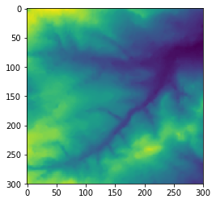
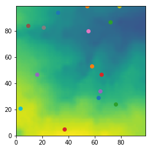
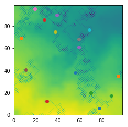
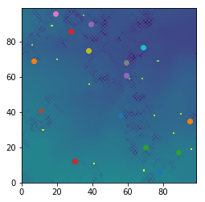

|  |  |
|  |  |
This page will introduce the basics behind the Agent Based Model created for the first assingment of this course. Example visual outputs created by the model can be seen to the left of this page, however it should be noted that due to the nature of agent based modelling, outputs will differ each time the model is run, they are provided as an example only.
The idea behind this project was an introduction to coding agent based models using using the Python coding language. The model is showcasing a relitively simple simulation of how sheep behave in a set area and the interaction between the sheep and the environment. In this context the sheep are the 'agents' and their physical surroundings around them is the environment they interact with.
When the model is run the agents (sheep) behaviour is dictated by the agent framework file, this is an agent class created that contains their behavioural information. This code defines what the agent is and how it interacts with both the environment and other agents in the model. Agent starting cordinates are set randomly and movement is also random, based on a randomly generated number between 0 and 1 affecting how cordinates change.
When the sheep move they interact with the enivornment first of all, taking away from the environment (eating grass) and adding this to their personal store which has been defined as a variable. To add realism to the model the sheep can only eat a certain amount before being sick and adding back to the environment, a pre defined value from their personal store is added to the environment data at their current cordinates. Aswell as this the sheep can also interact with each other, sharing from their personal stores if other agents are within their neighborhood, which is calculated by distance between agents.
The model reads in data in csv format, the agents are created by the code, as a default setting 15 agents will be created and it is run for 200 iterations, however this can be changed by the person running the code. After the model is run four seperate visual outputs are created representing different stages of the process, these are;
The final process carried out is the writing of a new CSV file after the agent based model has run, the file will be saved in the directory and shows the new environment values, allowing the user to see how this has changed. More information on what the code does is included in detailed comments within the code, a copy of the main code is included below to demonstrate functionality.
The full code can be accessed as Github repository by clicking here. The full repository can be downloaded, within the repository is information around licensing of the code along with a Readme file detailing how to run the code.